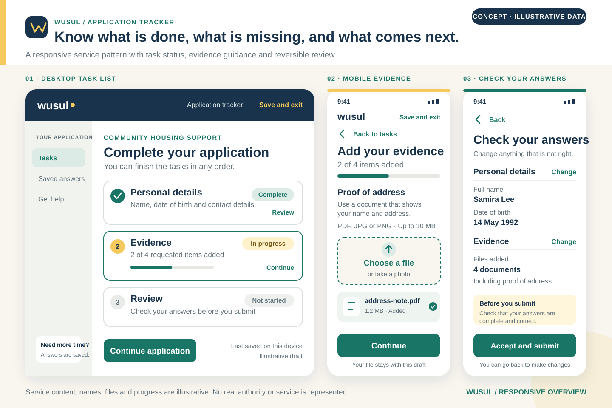
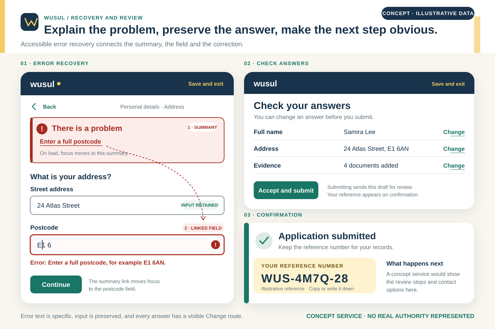

Concept Project · Self-initiated
Wusul
A service application that tells people what to do next—and helps them recover when something goes wrong.

The design brief
Wusul explores a multi-step public-service application that asks for personal details, supporting evidence, and a final review. The central problem is not visual decoration; it is helping someone understand the whole task, preserve their work, and correct mistakes.
The proposed experience uses a task list as its home base, with each section returning to a clear overall status before final submission.
Wusul is not a real government service and has no institutional affiliation. Names, reference numbers, evidence files, and application content are illustrative. No completion-rate or accessibility-testing result is claimed.
Pattern observations
The GOV.UK task-list pattern is designed to help people complete multiple tasks, understand what remains, and often work through sections in a flexible order. Its check-answers pattern places one review page before confirmation and provides Change links with accessible context.
These are established design patterns, not evidence that Wusul itself works. The concept translates their principles into a distinct fictional service and visual system.
Assumptions
- The application can be saved and resumed on the same account.
- Most tasks can be completed in a flexible order, but review remains last.
- Evidence requirements can be explained before a person chooses a file.
- People need a durable reference number and a clear submission receipt.
- Errors should preserve entered information wherever security and privacy allow.
These assumptions frame the prototype; they are not represented as observed service-user behavior.
Proposed experience
The task list is the application’s home
Each row names an action and a status. Completed, in-progress, and not-started sections remain visually and verbally distinct.
Requirements arrive before the upload control
Accepted formats, size limits, and examples appear before file selection to prevent avoidable errors rather than only explaining them afterward.
Review is a dedicated task
Answers are grouped by section with explicit Change actions, followed by one final submission decision and a durable confirmation.
Error recovery & review
The second proof sheet shows how an error summary, field-level explanation, retained input, and Change links work together as one recovery model.

Accessibility & content choices
- Move focus to the error summary after a failed submission, then link each error to its field.
- Repeat the specific correction beside the affected control rather than relying on the summary alone.
- Give every Change link accessible context so its destination is understandable out of visual context.
- Use status text in addition to color and keep rows comfortably operable by touch and keyboard.
- Avoid memory-based authentication barriers and unnecessary time limits in any future implementation.
What to validate next
Future research should examine whether people understand task status, can resume without searching for the right section, and can recover from an evidence error without losing work. Assistive-technology testing should include the summary, upload control, and review links.
The concept does not claim WCAG conformance; it identifies the criteria an implementation would need to meet and verify.
Research & Design References
These references supplied established form and accessibility patterns. They are not presented as Wusul-specific research.
- GOV.UK — Task listTask naming, status, and multi-step structure
- GOV.UK — Check answersReview placement and accessible Change actions
- GOV.UK — Error summaryLinked error recovery and field-level feedback
- W3C — WCAG 2.2Target size, accessible authentication, and verification criteria